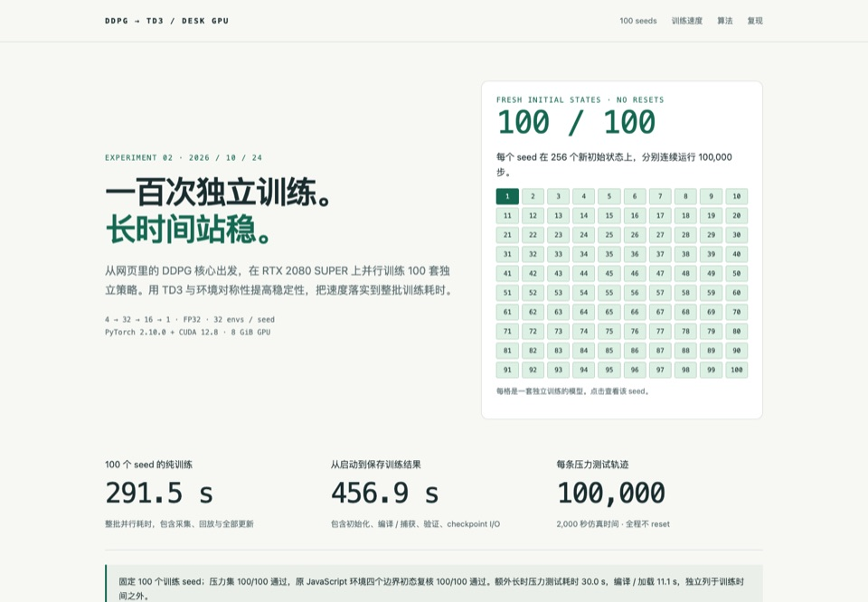
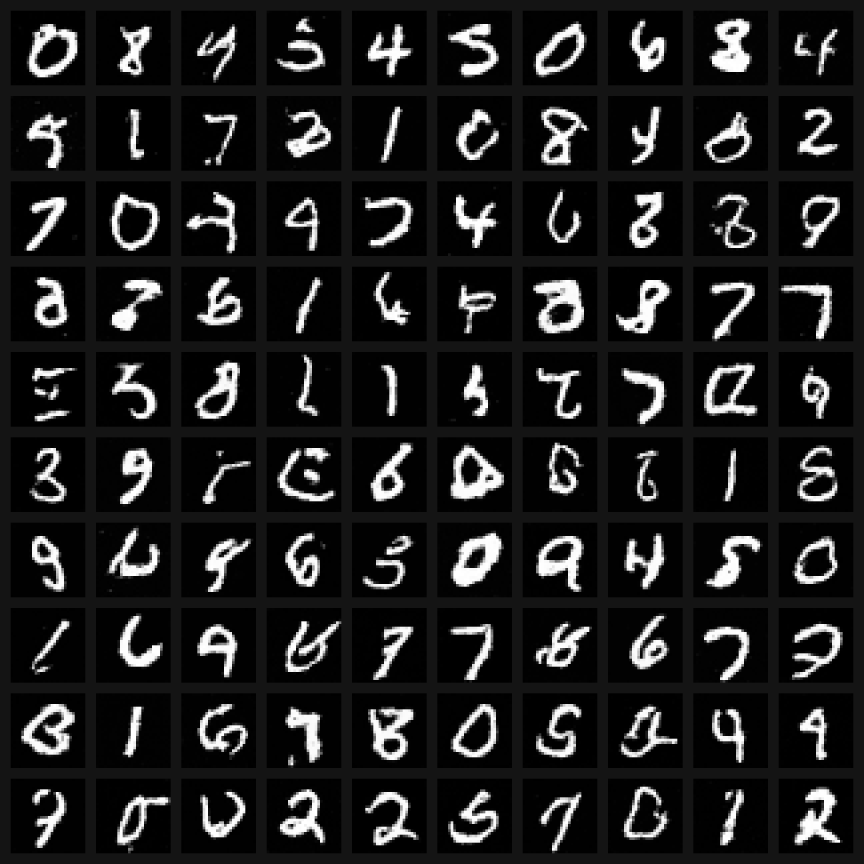
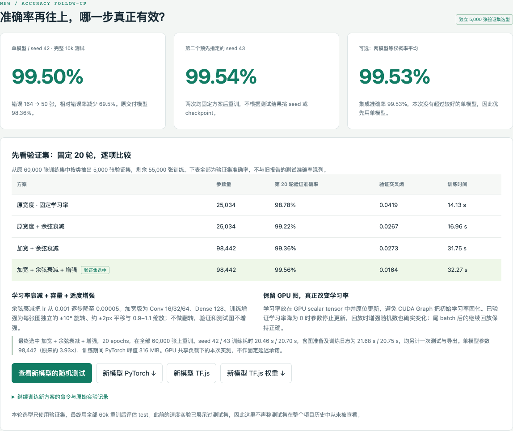
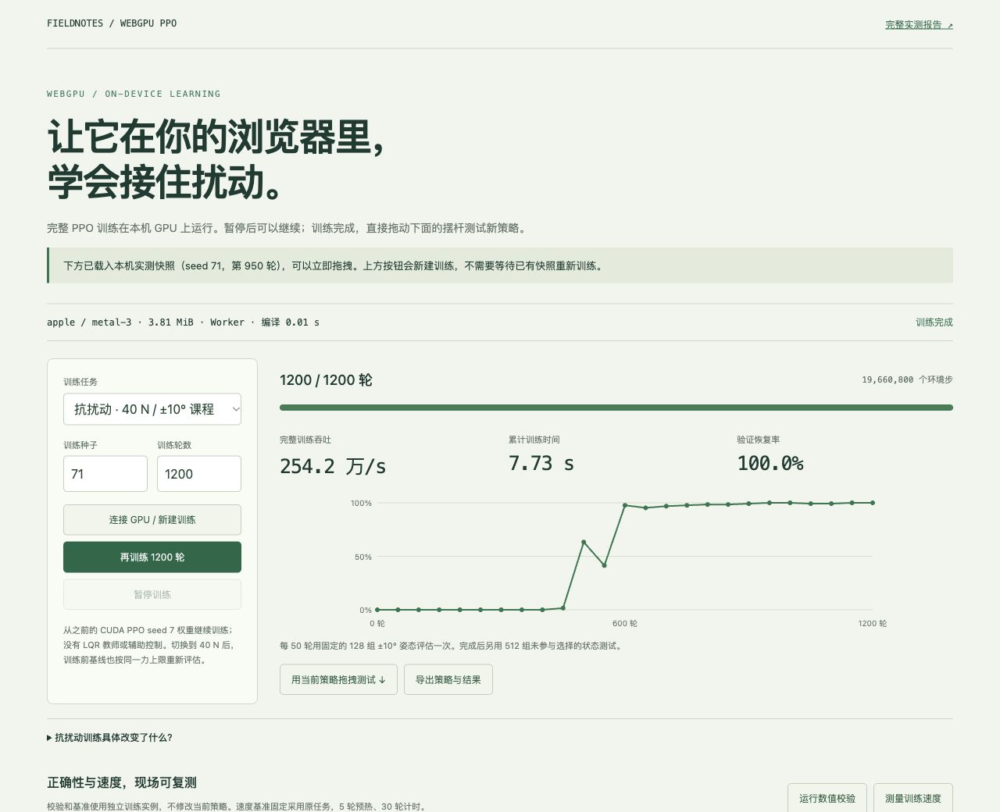
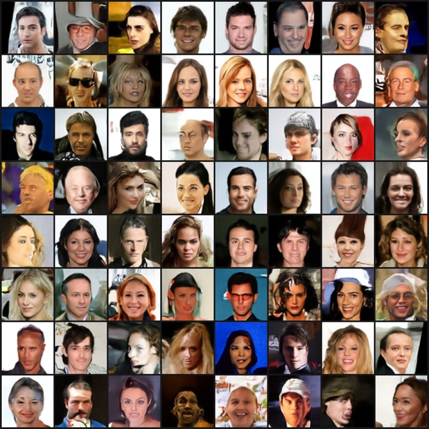

MCMC / Precision lab
同一目标，在浏览器里比较三种精度。
FP32、FP16 缓存与 FP16 exp 的实际轨迹、内存、缓存误差和独立 Float64 全图验收都可现场复测。
FP32 / FP16精度与缓存对照
Experiment index · 6 labs / 15 pages · measured 2026-10-24
最新一轮：100 个 TD3 种子通过长时压力测试；WebGPU 让 MCMC 与 PPO 训练进入浏览器； CelebA 四组 RGB 任务全部完成，U-Net 的 KID 明显低于 JiT。每项同时保留关键结果、 原始记录与不能混用的测量边界。下方专题区只补主卡片未列出的精度工作台、ROI、 原版基线与灰度归档，避免重复入口和把补充实验埋在长报告里。
Core experiments · 01—06
关键指标直接摘自主报告；点击标题或 REPORT 进入完整测量过程。

TD3 · 100 / 100TD3 · 100 independent seeds
固定 seeds 1–100，用 logit 奇对称 TD3、镜像增强与冻结通过策略跑完整验收；失败尝试和调试预算单独保留。

DDIM · quality / speedMCMC + Adam · Splatting
ROI MCMC 与并行 Adam 已移植到 WebGPU；同目标、同初始化做纯 Adam 消融，并保留 CUDA/desk 对照。

test · 99.50%
WebGPU · 3 seedsPPO · GPU + live lab
V2 重整 rollout 与 critic 批评估；新增 WGSL PPO 训练工作台，可在浏览器直接训练并拖拽验证。

RGB · U-Net 64 samplesCelebA · RGB 64×64 · 4 / 4 done
四组 16 卡任务各累计 512 万张次；两档学习率取较低的最终慢 EMA KID。单训练种子、训练历史不同，不能当作只改变架构的严格消融。
Supplementary experiments · 05 pages
只收录主卡片尚未列出的入口；与主报告共用原始记录，但各自保留基线、计时和交互边界。
MCMC / Precision lab
FP32、FP16 缓存与 FP16 exp 的实际轨迹、内存、缓存误差和独立 Float64 全图验收都可现场复测。
MCMC / Adam ROI
固定 1,600 高斯 × 8 链，对照 6σ／4.5σ／4σ 裁剪与单／四 Worker 完整 Float64 验收。
MNIST / Browser origin
仅固定上游版本与资源地址；网络结构和训练回调不变，用于解释浏览器与 desk 的跨框架对比。
CelebA / Profiling
五轮同卡交错复测；Graph 与 Triton 先通过梯度、参数和续训门槛，再进入正式训练入口。
CelebA / Negative archive
保留亮度／对比度 W₁、颜色统计和权重消融；单种子指标靠近不代表完整人脸分布已经匹配。
自包含 HTML，不依赖 CDN。图表、表格与数字可直接打开和归档。
JSON、日志、验证脚本和报告生成器都在对应实验目录中。
不同基线、dtype、链预算与是否计入 setup 的测量不相互相乘。
desk 上仍有其他 GPU 任务；结果记录波动与机器上下文，而非独占上限。